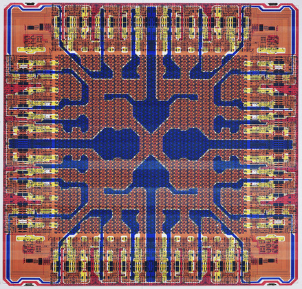

Robotic Arts Intro Fall 2018 (IA277.01)
- Instructor: Lucas Haroldsen (lharoldsen@mica.edu)
- Class Site: yasunaga.work/raif18
- syllabus: syllabus.pdf
- Resources: links.html
10/05: protyping process 1 idea meditation
Today is an idea exersizing workday for Project 1: the midterm
Schedule
- Presentation
- Arduino Review
- Tip and tricks on prototyping
- Individual meeting
Arduino Review
Take a look at what we have gone over so far if you need!
- Basic Component
- Digital Input and Output
- variables
- if else --video
- Analog Input, Serial Print, Threshold --video
- Analog output and tone()
Important resource
- Arduino Language Reference Page
- Arduino Playground
- Arduino Foundations Extended guide for learning arduino
- Adafruit Arduino Lessons Well documented 17 parts tutorials
Introduction / Context
Graham Harman on Heidegger & the Arts 4:00 ~ 7:30

Trisha Donnelly curated computer chip design drawings
The Circuit: Tracking America's Electronic Waste
Cyrus Kabiru
Chris Hackett
Safety!
Read Device Safety from ifixit.com
- NEVER take things apart when plugged in!
- Look out for large capacitors like this. Let me know if you see one or are unsure
- If you feel unsafe performing any aspect of the taking apart process, stop working and ask for advice
- Avoid taking apart:
- CRT (Cathode Ray Tube) Displays (old type of monitors)
- Microwaves
- toaster ovens
- Other AC appliances with heating and cooling capabilities
- Digital cameras with flash might contain some high voltage capacitors
- NEVER plug in AC electronics once you take them apart
Things to think about when you are working with found electronics:
- Is it a working device?
- Does your electronic use AC or DC?
- What is the brand and model number?
- Can you find a service manual or schimatic online?
- What is the voltage this devise uses?
- Does it use a power adaptor or battery? (DC)
- What parts can I use?
Useful things to look for
- switches and buttons
- power transformers and power adaptors
- potentiometors and knobs
- motors
- speakers
- piezos
- gears and gear assemblies
- drive belts and rods
- screws
Class assignment: Make a drawing!
Make a simple drawing(s) of parts of electronics you are taking apart. This is an simple exercice realating to electronics with act of drawing. We will look at the drawing at the end of the class
Artist talk + visit with Bonnie Crawford: 7pm sharp!

{kind=link}
e-waste locations
- First floor of Digital Print Center next to the computer lab. There are black shelves and blue bins for broken electronics
- Brown Building First floor on the way to Cafe Doris
- Bunting First Floor next to bulletin board
Resources
Keyboard Hack
If your device is working and wnat to hack into the buttons, try this!
TIP120 DC button Bypass CircuitHOMEWORK
Project 1: the midterm
Project 1 is due October 24th. See the details on this link here.
Next week, come up with a working prototype of your project. A working prototype does not have to look good. It's a mock up of your project in its simplest form so you can understand how it works. Don't be precious about this stage, pay attention to the limits and constraints you learn form your prototypes.
The first prototype can be a small scale version of your project. If your project has 10 switches, make it work with 2 or 3 switches first.
Reading
Chapter 1: What is poetic about computation?
from Poetic Computation by Taeyoon Choi